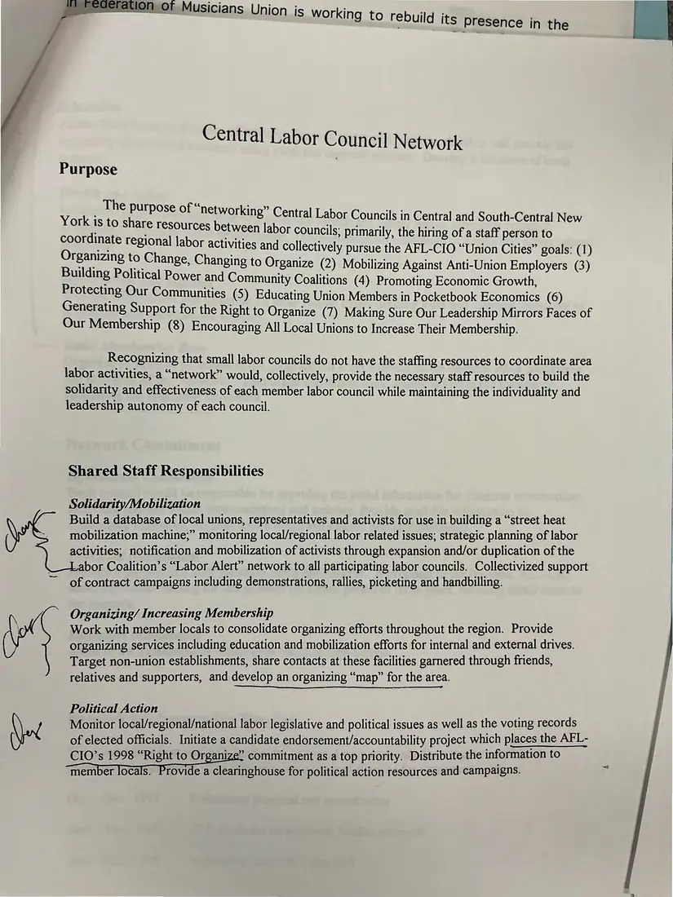
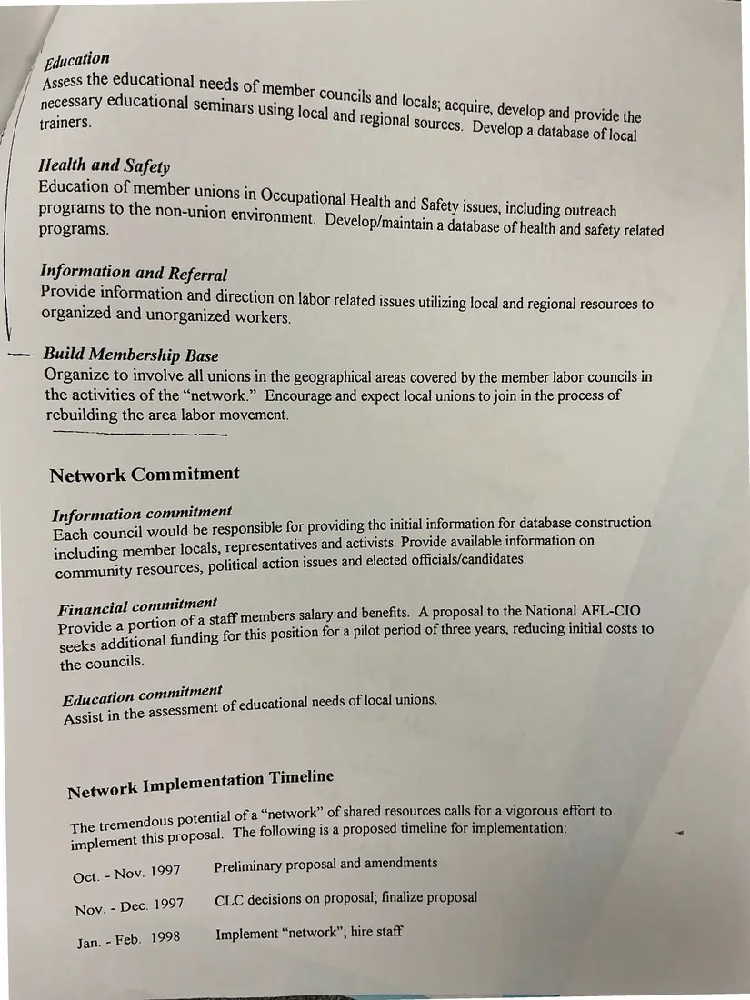

Proposal, 2 pages
“Central Labor Council Network” proposal (annotated draft)
[Fall 1997]Date inferred
Another version of the network proposal for sharing staff among small labor councils, with handwritten marks beside the responsibilities and the implementation timeline. Page 2 precedes page 1 in the source.
Download or cite this itemPages


(open zoom view)Read the page text (OCR, contains errors)
This text was read from the photograph (OCR) and has not been corrected. The image is the authoritative record.
Central Labor Council Network Purpose The purpose of “networking” : orking” Central Labor Councils in Cent - York is to share resources between lab ral and South-Central New or councils; primarily, the hiring of a staff person to ar collectively pursue the AFL-CIO “Union Cities” goals: (1) Sone seca Changing to Organize (2) Mobilizing Against Anti-Union Employers (3) pee 0 itical Power and Community Coalitions (4) Promoting Economic Growth, Protecting Our Communities (5S) Edu : cating Union Members in Pocketbook Economics (6) Generating Support for the Right to O ) rganize (7) Making Sure Our Leadership Mirrors Faces of Our Membership (8) Encouraging All Local Unions to Increase Their Membership. Recognizing that small labor councils do not have the staffing resources to coordinate area labor activities, a “network” would, collectively, provide the necessary staff resources to build the solidarity and effectiveness of each member labor council while maintaining the individuality and leadership autonomy of each council. Shared Staff Responsibilities Solidarity/Mobilization Build a database of local unions, representatives and activists for use in building a “street heat mobilization machine;” monitoring local/regional labor related issues; strategic planning of labor activities; notification and mobilization of activists through expansion and/or duplication of the bor Coalition’s “Labor Alert” network to all participating labor councils. Collectivized support of contract campaigns including demonstrations, rallies, picketing and handbilling. Organizing/ Increasing Membership Work with member locals to consolidate organizing efforts throughout the region. Provide organizing services including education and mobilization efforts for internal and external drives. Target non-union establishments, share contacts at these facilities garnered through friends, relatives and supporters, and develop an organizing “map” for the area. Political Action Monitor local/regional/national labor legislative and political issues as well as the voting records of elected officials. Initiate a candidate endorsement/accountability project which places the AFL- CIO’s 1998 “Right to Organize” commitment as a top priority. Distribute the information to member locals. rovide a clearinghouse for political action resources and campaigns.


(open zoom view)Read the page text (OCR text, mostly readable)
This text was read from the photograph (OCR) and has not been corrected. The image is the authoritative record.
—— Build Membership Base Organize to in ee ae activities Det ae ae ico yal i mciaucr ver councils ul 19: . Encourage and expect local uni Soe F rebuilding the area labor movement. p al unions to join in the process of ee oer ee Network Commitment Information commitment Each council would be responsible for providing the initial information for database construction including, member locals, representatives and activists. Provide available information on community resources, political action issues and elected officials/candidates. Financial commitment aff members salary and benefits. A proposal to the National AFL-CIO Provide a portion of a st : 5 § seeks additional funding for this position for a pilot period of three years, reducing initial costs to the councils. Education commitment | Assist in the assessment of educational needs of local unions. ial of a “network” of shared resources calls for a vigorous effort to The tremendous potent OS |. The following is a proposed timeline for implementation: is proposa Preliminary proposal and amendments CLC decisions on proposal; finalize proposal Jan. - Feb. 1998 Implement “network”; hire staff
See something wrong, or recognize a person or event? Send a correction. If you hold rights in this item or think it should not be public, write to the same address.